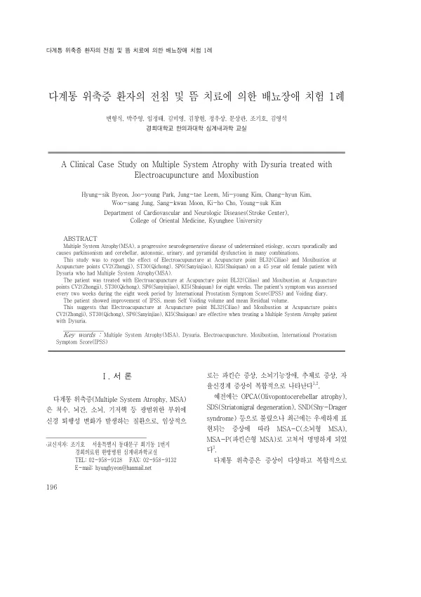

다계통 위축증 환자의 전침 및 뜸 치료에 의한 배뇨장애 치험 1례
Byeon Hs, Park Jy, Leem Jt, Kim My, Kim Ch, Jung Ws, Moon Sk, Cho Kh, Kim Ys
The Journal of Internal Korean Medicine 196-203

첫 장 · 오픈액세스First page · open access
논문 소개Summary
다계통위축증 환자의 배뇨장애를 전침과 뜸으로 치료한 증례입니다. 다계통위축증은 원인을 모르는 진행성 신경퇴행질환으로 파킨슨증상과 소뇌기능장애, 자율신경계 증상이 복합적으로 나타나고 파킨슨병보다 진행이 빠르며 예후가 나쁩니다. 45세 여성에게 차료에 전침을, 중극과 기충, 삼음교, 수천에 뜸을 8주 동안 시행하고 2주마다 국제전립선증상점수와 배뇨일지로 평가했습니다. 증상점수는 28점에서 20점, 16점을 거쳐 12점으로 낮아졌고 평균 잔뇨량도 500밀리리터에서 240밀리리터로 줄었습니다. 환자는 장기 입원을 이유로 퇴원했습니다. 대조군 없는 증례 한 건이므로 자연 경과와 가려낼 수 없습니다.
A case of dysuria in multiple system atrophy treated with electroacupuncture and moxibustion. Multiple system atrophy is a progressive neurodegenerative disease of undetermined cause, combining parkinsonism with cerebellar and autonomic dysfunction, progressing faster than Parkinson's disease and carrying a worse prognosis. A 45-year-old woman received electroacupuncture at BL32 and moxibustion at CV2, ST30, SP6 and KI5 over eight weeks, assessed every two weeks by the International Prostate Symptom Score and a voiding diary. Her score fell from 28 to 20, then 16, and finally 12, while mean residual urine volume decreased from 500 mL to 240 mL. She was discharged owing to the length of admission. As a single uncontrolled case, the course cannot be separated from natural recovery.
인용Cite
Byeon Hs, Park Jy, Leem Jt, Kim My, Kim Ch, Jung Ws, Moon Sk, Cho Kh, Kim Ys. 다계통 위축증 환자의 전침 및 뜸 치료에 의한 배뇨장애 치험 1례. The Journal of Internal Korean Medicine. 2008:196-203.